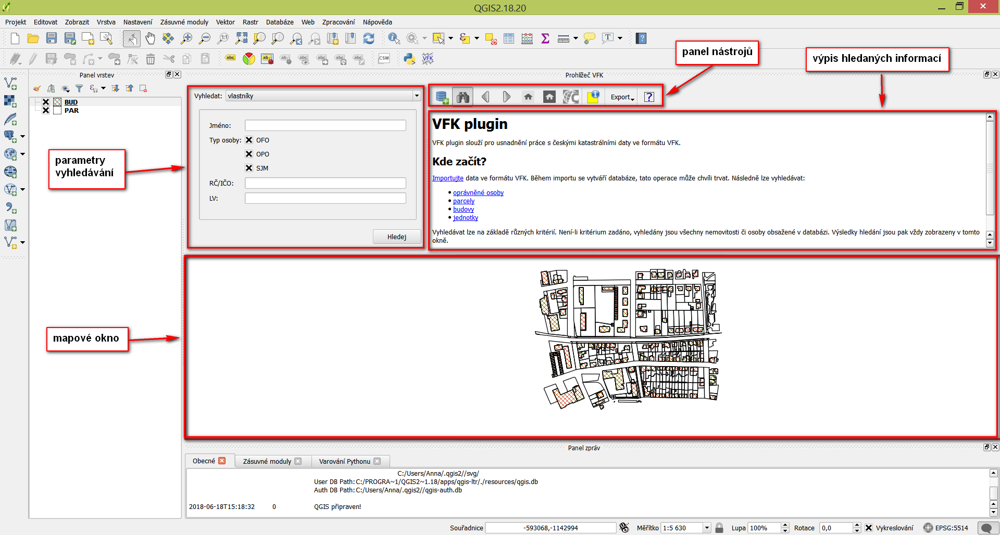
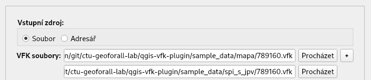

Návod k použití¶
Uživatelské rozhraní¶
Import VFK souboru¶
Při importu dat nejdříve vyberte soubor ve formátu VFK a následně
zaškrtněte vrstvy, které chcete importovat - ve výchozím nastaveni jde
o Parcely (PAR) a Budovy (BUD). Můžete zvolit obě, jednu z nich nebo
žádnou. Pokud nezaškrtnete žádnou, načtou se pouze popisná data. Bude
tedy možné vyhledávat informace, ale nebude možná interakce s
mapou. Nakonec klikněte na tlačítko Načíst.
Rozhraní umožňuje načíst více VFK souborů najednou, případně všechny VFK soubory ze zvoleného adresáře.
Poznámka
Pokud načítáte více VFK souborů najednou, tak platí omezení na jedno katastrální území. Zásuvný modul v současné době neumožňuje pracovat s daty pokrývající více než jedno katastrální území.
Prohlížení dat¶
V panelu nástrojů stiskněte ikonu vyhledávání (dalekohled). V levé části
prohlížeče VFK vyberte v rozbalovacím menu, co chcete vyhledat - vlastníky,
parcely, budovy nebo jednotky. Po výběru možnosti, zadejte parametry vyhledávání
a klikněte na tlačítko Hledej. Můžete zadat jeden, ale i více parametrů
vyhledávání. Vyhledané informace se zobrazí v pravém okně prohlížeče VFK.
Tip
Pokud nezadáte žádný parametr vyhledávání, jsou vyhledány všechny nemovitosti či osoby obsažené v databázi.
Prohlížeč VFK funguje obdobně jako webové prohlížeče. Kliknutím na odkaz se zobrazí informace o stavbě, parcele, oprávněných osobách nebo list vlastnicví. Stejně jako ve webovém prohlížeči se ukládá historie stránek, je tedy možné listovat tam a zpět, a proto není třeba opakovaně vykonávat dotazy do databáze.
Pokud chcete zobrazit vyhledaná data v mapovém okně, klikněte na ikonu Označit
aktuální budovy/parcely v mapě v panelu nástrojů.
Zásuvný modul umožňuje také otevření aplikace Nahlížení do katastru nemovitostí ve webovém prohlížeči pro aktuálně zobrazovanou nemovitost. Je zavolán ten webový prohlížeč, který máte nastavený jako výchozí ve vašem operačním systému.
Získaní informací o vlastnících¶
Soubory VFK neobsahují informace o vlastnicích (oprávněných subjektech).
Tyto informace lze získat pomocí služby ČÚZK WSDP. Pro
tento účel si nejprve zřiďte
uživatelský účet. V panelu nástrojů stiskněte ikonku Stáhnout
posidenty pro vybrané budovy a parcely a vyplňte přihlašovací údaje.
Vyberte v mapovém okně budovy nebo parcely, pro které si přejete tyto
informace získat a stiskněte tlačítko Získej posidenty.
Poznámka
Zásuvný modul používá pro získání posidentů knihovnu PyWSDP.
Po přepnutí do panelu vyhledávání jsou informace o vlastnících již dostupné.
Export dat¶
Momentálně je možný export dat do formátů LaTeX (možno následně vytvořit PDF) a HTML (možno následně vytvořit ODF např. překopírováním HTML stránky z webového prohlížeče do LibreOffice).